<!doctype html>
<html lang="en">
<head>
<meta charset="utf-8">
<!-- CUSTOMIZE THIS! -->
<title>Einführung in die Digital Humanities</title>
<meta name="author" content="Christof Schöch">
<!-- END -->
<meta name="description" content="Slides">
<meta name="apple-mobile-web-app-capable" content="yes">
<meta name="apple-mobile-web-app-status-bar-style" content="black-translucent">
<meta name="viewport" content="width=device-width, initial-scale=1.0, maximum-scale=1.0, user-scalable=no, minimal-ui">
<link rel="stylesheet" href="css/reveal.css">
<link rel="stylesheet" href="css/theme/simple.css" id="theme">
<!-- Code syntax highlighting -->
<link rel="stylesheet" href="lib/css/zenburn.css">
<!-- Printing and PDF exports -->
<script>
var link = document.createElement( 'link' );
link.rel = 'stylesheet';
link.type = 'text/css';
link.href = window.location.search.match( /print-pdf/gi ) ? 'css/print/pdf.css' : 'css/print/paper.css';
document.getElementsByTagName( 'head' )[0].appendChild( link );
</script>
<!--[if lt IE 9]>
<script src="lib/js/html5shiv.js"></script>
<![endif]-->
</head>


<body>
<div class="reveal">
<div class="slides">
<section data-markdown="" data-separator="^\n---\n" data-separator-vertical="^\n--\n" data-charset="utf-8" data-background-image="img/basics/uni-trier-mini.png" data-background-size="50px" data-background-position="top right">
<script type="text/template">

## Datenmodellierung 1: Modellierung
<hr/>
<br/>
<br/>Vorlesung *Einführung in die Digital Humanities*
<br/>MSc Digital Humanities | Wintersemester 2020/21
<br/>
<br/>Prof. Dr. Christof Schöch
<br/>
<br/>
<hr/>
<br/>


---
## Sitzungsüberblick
<br/>
1. Daten
2. Modell
3. Datenmodellierung
4. Wozu eigentlich Datenmodellierung?


---
# 1. Daten

--
## Definition von "Daten"
<br/>

>Data is a set of values of qualitative or quantitative variables. <br/>("Data", *Wikipedia*)

--
## Definition von "Daten"
<br/>

>Data is "the absence of uniformity". <br/>(Luciano Floridi 2010)

--
## Definition von "Daten"
<br/>

>Data in the humanities could be considered a digital, selectively constructed, machine-actionable abstraction representing some aspects of a given object of humanistic inquiry. <br/> (Schöch 2013)

--
## Digitale Daten
<br/>
* diskret (statt kontinuierlich)
* binär repräsentiert (0 und 1)
* maschinenlesbar
* vervielfältigbar
* "Information wants to be free"<br/>(<a href="https://en.wikipedia.org/wiki/Information_wants_to_be_free">Stewart Brand, 1984</a>)


--
## Strukturierte Daten?
<br/>
* strukturiert: bspw. Relationale Datenbanken
* semi-strukturiert: bspw. XML-Dateien, JSON-Dateien
* unstrukturiert: bspw. plain text oder Pixelgrafiken

--
## Datenstrukturen
<br/>
* linear: bspw. Listen, Tabellen
* hierarchisch: bspw. XML oder JSON
* multi-relational: bspw. Netzwerke (Graphen)

--
## Verwandte Begriffe
<br/>
* Gegenstand
* Datensatz
* Datensammlung
* Datenbank
* Korpus
* Digitale Edition
* Information
* Wissen

--
## DIKW-Pyramide
<br/>
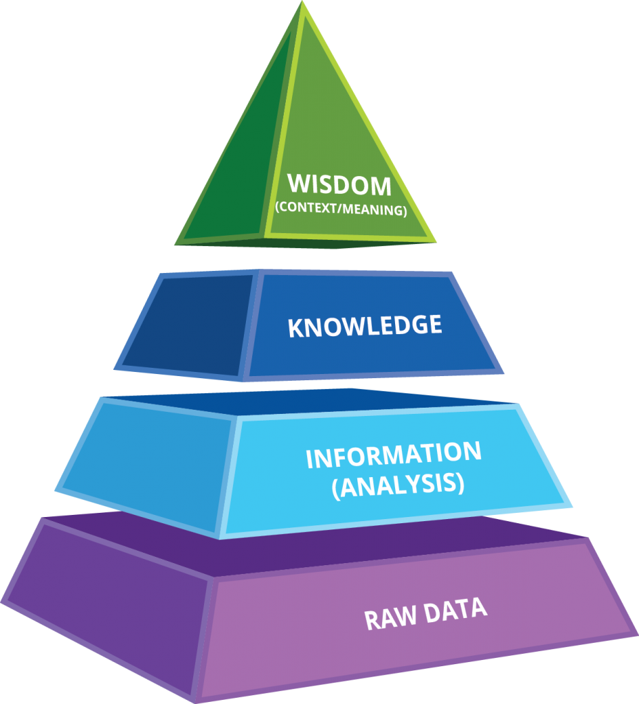</img>
<br/><small>(Quelle: O.A, DIKW Pyramid, 2017, https://www.kisspng.com/png-dikw-pyramid-business-intelligence-knowledge-organ-2664729/)</small>


--
## DIKW: Beispiel Wahldaten 2020
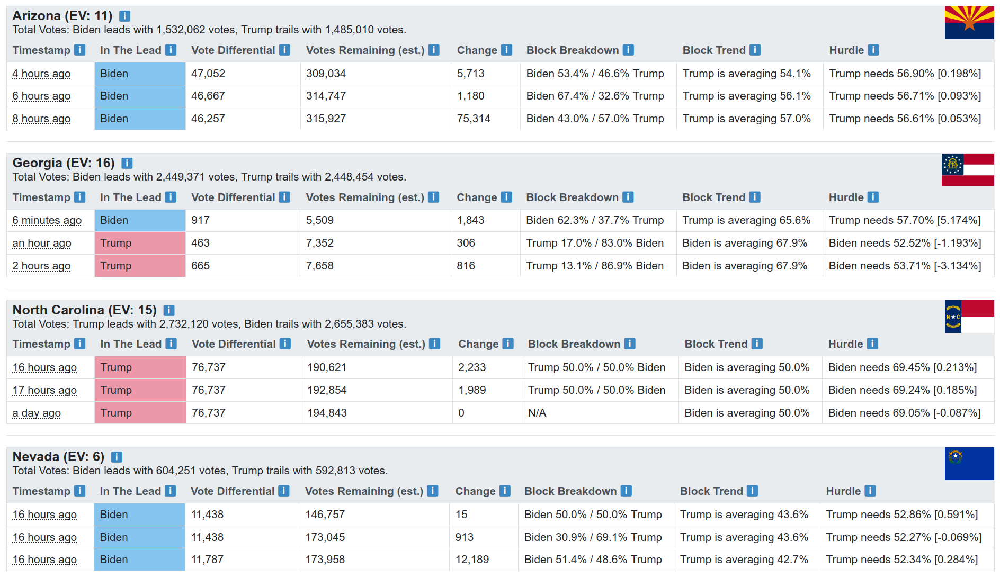</img>
<br/><small>(Quelle: [Contributors](https://github.com/alex/nyt-2020-election-scraper/graphs/contributors), [Visualisierung](https://alex.github.io/nyt-2020-election-scraper/battleground-state-changes.html#), 2020. 

--
## DIKW: Beispiel Time Magazine
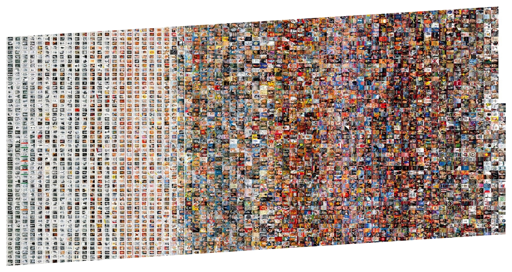</img>
<br/><small>(Quelle: Lev Manovich, Timeline Project, [URL](http://manovich.net/index.php/exhibitions/timeline), 2010.)


---
# 2. Modell

--
## Modellflugzeug
</img>
<br/><small>(Quelle: <a href="https://en.wikipedia.org/wiki/User:KPWM_Spotter" class="extiw" title="en:User:KPWM Spotter">KPWM Spotter</a> at the <a href="https://en.wikipedia.org/wiki/" class="extiw" title="w:">English language Wikipedia</a>, <a href="http://creativecommons.org/licenses/by-sa/3.0/" title="Creative Commons Attribution-Share Alike 3.0">CC BY-SA 3.0</a>, <a href="https://commons.wikimedia.org/w/index.php?curid=18023167">Link</a>.)</small>

--
## Modellflugzeug
</img>
<br/><small>(Quelle: User Carl @FellowCreative, https://www.flickr.com/photos/fellowcreative/8056510218/, <a href="https://creativecommons.org/licenses/by-nc/2.0/">CC-BY NC 2.0</a>.) </small>

--
## Bauplan
</img>
<br/><small>(Quelle: User Boereck, "A sample floor plan for a single-family home", https://en.wikipedia.org/wiki/Floor_plan#/media/File:Sample_Floorplan.jpg, public domain.)</small>

--
## Modell: verwandte Begriffe
<br/>
* Beschreibung (deskriptiv) <!-- .element: class="fragment" data-fragment-index="1" -->
* Theorie (erklärend) <!-- .element: class="fragment" data-fragment-index="2" -->
* Begriff (benennend) <!-- .element: class="fragment" data-fragment-index="3" -->
* Abstraktion (vereinfachend) <!-- .element: class="fragment" data-fragment-index="4" -->
* Auswahl (selektiv) <!-- .element: class="fragment" data-fragment-index="5" -->
* Klassifikation (ordnend) <!-- .element: class="fragment" data-fragment-index="6" -->
* Formalisierung (explizit) <!-- .element: class="fragment" data-fragment-index="7" -->
* Simulation (dynamisch) <!-- .element: class="fragment" data-fragment-index="8" -->

--
## Modellbegriffe
<br/>
* Perspektive: <!-- .element: class="fragment" data-fragment-index="1" -->
    * Modell von (repräsentiert einen Gegenstand)
    * Modell für (zweckorientiert, handlungsleitend)
* Gegenstandsmodell vs. Prozessmodell <!-- .element: class="fragment" data-fragment-index="2" -->
* Statistisches Modell vs. Datenmodell <!-- .element: class="fragment" data-fragment-index="3" -->

--
## Statistisches Modell
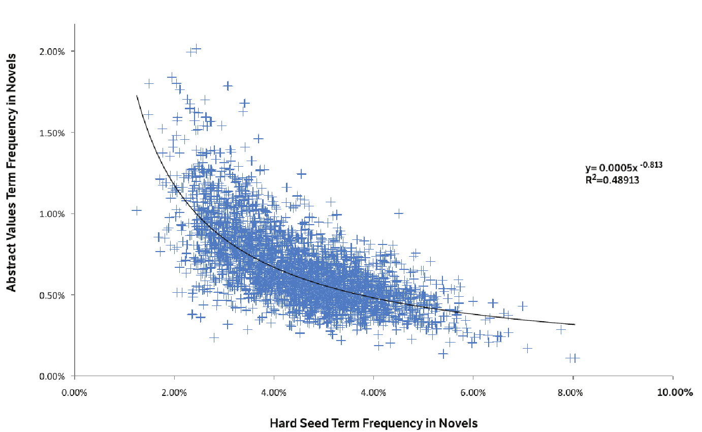</img>
<br/><small>Quelle: Ryan Heuser, Long Le-Khac: „A Quantitative Literary History of 2,958 Nineteenth-Century British Novels: The Semantic Cohort Method." in: Literary Lab Pamphlet, 4, 2012, S. 31.)</small>

--
## Datenmodell: Definition
<br/>
>“A data model [...] is an abstract, self-contained, logical definition of the data structures, data operators, and so forth, that together make up the abstract machine with which users interact.” (Data, in Flanders/Jannidis 2016)


--
## Datenmodell: Beispiel
<pre>
<code>
default namespace = "htttp://www.tei-c.org/ns/1.0"
start =
  element TEI {
    element text {
      element body {
        element div {
          element head { text },
          element lg {
            element l { text }+
          }+
        }
      }
    }
  }
</code>
</pre>
Eine Formulierung eines Datenmodells<br/>(Schema in Relax NG compact syntax)


--
## Beispiel: OHCO-Diagramm
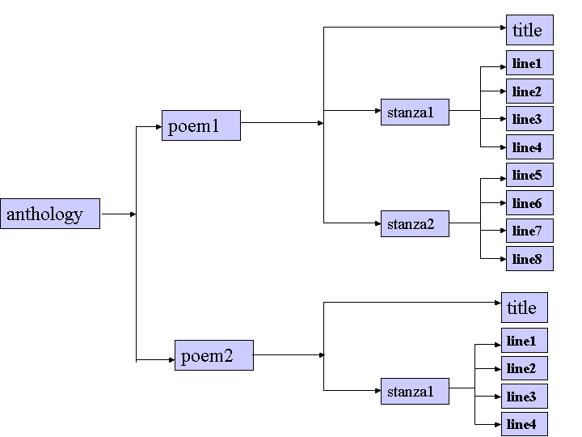</img>
<br/><small>Visuelle Darstellung eines Datenmodells<br/>(Quelle: Quelle: „A gentle introduction to XML“, in: Sperberg-McQueen, C.M.; Burnard, Lou (Hg.), Guidelines for Electronic Text Encoding and Interchange, 2004. http://www.tei-c.org/Vault/P5/1.0.1/doc/tei-p4-doc/html/SG.html, <a href="http://creativecommons.org/licenses/by/3.0/">CC-BY 3.0.</a>)</small>


---
# 3. Datenmodellierung

--
## Datenmodellierung: Definition
<br/>
> The term “data modeling” in computer science is most typically used in a fairly restrictive sense for the modeling of relational databases, while the digital humanities has a more general understanding of the term: data modeling is the modeling of some segment of the world in such a way to make some aspects computable. (Flanders/Jannidis 2016)


--
## Drei Ebenen des Datenmodells
<br/>
1. Konzeptuelles Datenmodell <!-- .element: class="fragment" data-fragment-index="1" -->
    * Abstrakte Einheiten: Typen, Eigenschaften, Relationen
2. Logisches Datenmodell <!-- .element: class="fragment" data-fragment-index="2" -->
    * Formale Notation des konzeptuellen Datenmodells
3. Physisches Datenmodell <!-- .element: class="fragment" data-fragment-index="3" -->
    * Hardwarenahe Implementierung des logischen Datenmodells


--
## Drei Abstraktionslevels (Beispiel)
<br/>
1. Bestimmte digitale Kodierung eines bestimmten Briefs <!-- .element: class="fragment" data-fragment-index="1" -->
    * konkrete XML-Datei = (modellierte) Instanz
2. Elemente mit Eigenschaften und Relationen bei Briefen <!-- .element: class="fragment" data-fragment-index="2" -->
    * konkretes Schema = (logisches) Datenmodell
3. Eine formale Sprache, mit der die Elemente und Relationen definiert werden können <!-- .element: class="fragment" data-fragment-index="3" -->
    * bspw. Relax NG oder XML = (allgemeines) Metamodell


---
# 4. Wozu eigentlich Datenmodellieren?

--
## "The residue of uniqueness"
</img>
<br/>Willard McCarty
* Autor des Buchs *Humanities Computing*, 2005
* Moderiert seit 1987 die Humanist-List
* Hat 2016 den Busa-Award der ADHO erhalten
<br/><br/><small>(Bildquelle: http://www.mccarty.org.uk/IMG_8042.jpg)</small>

--
## Datenmodellierung nach McCarty...
<br/>
* ... als zentrale Tätigkeit der Digital Humanities <!-- .element: class="fragment" data-fragment-index="1" -->
* ... als Prozess, nicht als Ergebnis <!-- .element: class="fragment" data-fragment-index="2" -->
* ... als iterativer Prozess <!-- .element: class="fragment" data-fragment-index="3" -->
* ... als erkenntnisfördernder Prozess <!-- .element: class="fragment" data-fragment-index="4" -->
* ... als leitende Grundlage für folgende Analysen <!-- .element: class="fragment" data-fragment-index="5" -->


--
## Beipiel: Theaterstücke
<br/>
* als Bildscan eines Buchs (mit Transkription): PDF
* als TEI-kodierte Textdatei: XML
* als Term-Dokument-Matrix: CSV
* Als "Zwischenformat": XML
* als Adjazenz-Matrix: CSV
* ... und davon abgeleitete Analysen

--
## Modell: Bildscan
</img>

--
## Modell: XML-Datei (nach TEI)
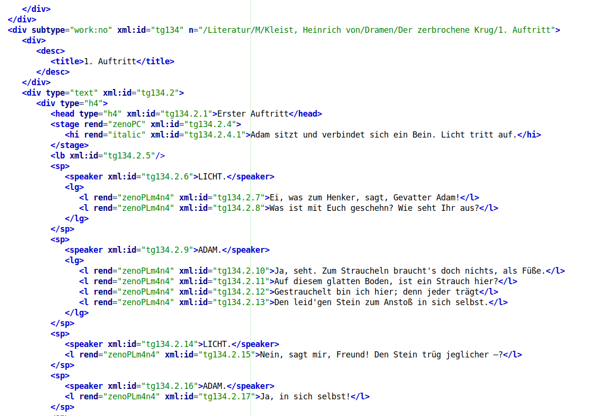</img>

--
## Modell: Term-Dokument-Matrix
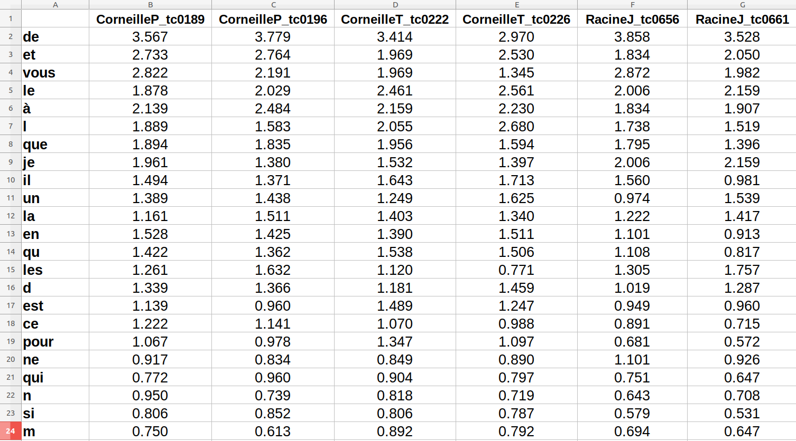</img>

--
## Modell: "Zwischenformat" (DLINA)
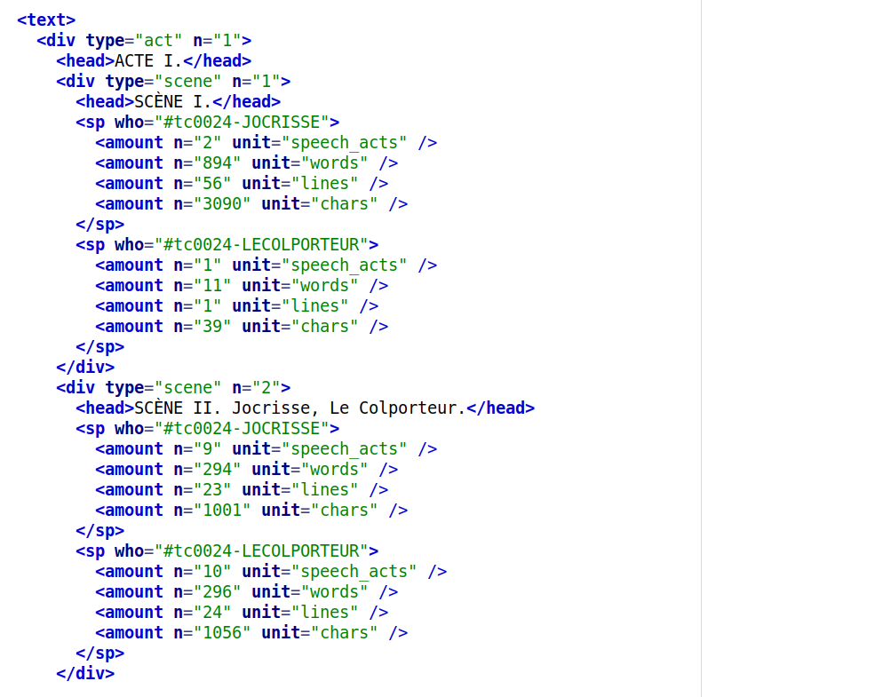</img>

--
## Modell: Adjazenzmatrix
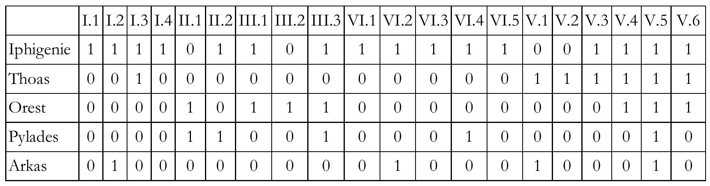</img>
<br/><small>(Quelle: Trilcke, Peer, „Social Network Analysis (SNA) als Methode einer textempirischen Literaturwissenschaft“. In: Philip Ajouri, Katja Mellmann u. Christoph Rauen (Hg.): Empirie in der Literaturwissenschaft, Münster 2013, S. 201–247, 226.)</small>

--
## Analyse: Soziomatrix
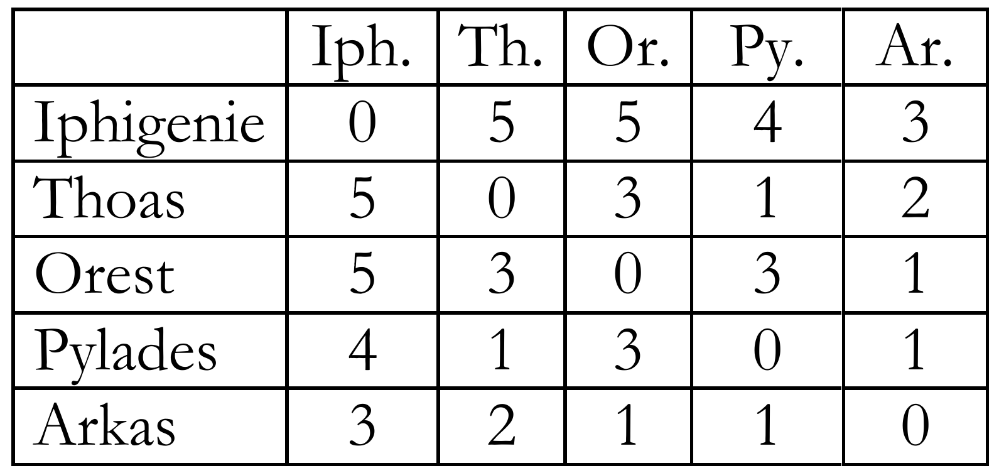</img>
<br/><small>(Quelle: Trilcke, Peer, „Social Network Analysis (SNA) als Methode einer textempirischen Literaturwissenschaft“. In: Philip Ajouri, Katja Mellmann u. Christoph Rauen (Hg.): Empirie in der Literaturwissenschaft, Münster 2013, S. 201–247, 226.)</small>

--
## Analyse: Replikenverteilung
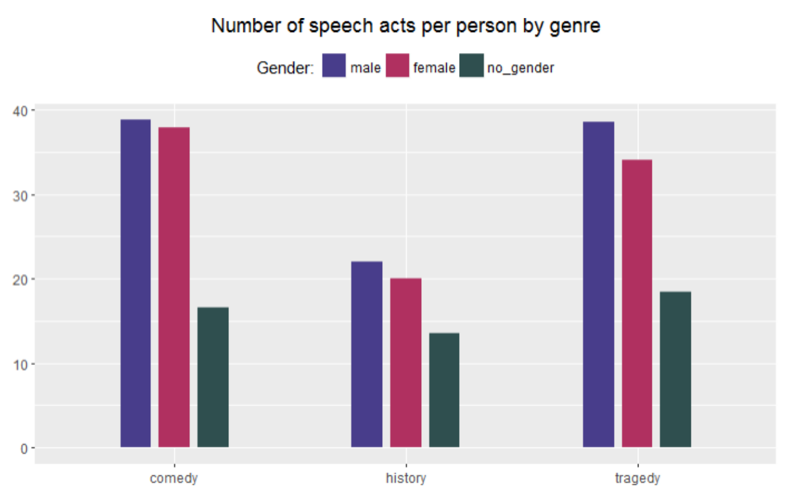</img>

--
## Analyse: Textähnlichkeit
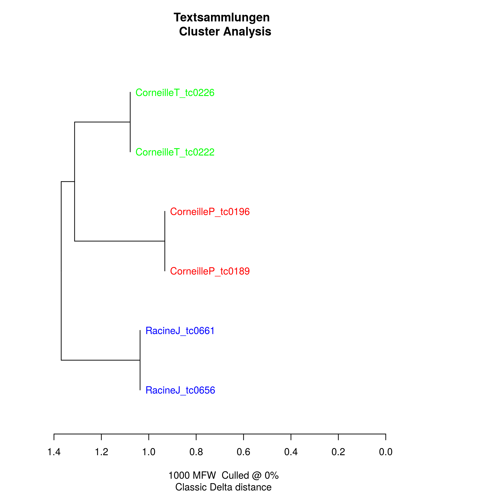</img>


---
# Abschluss

--
## Fragen?

--
## Lektürehinweise
<small>

* Fotis Jannidis, "Grundlagen der Datenmodellierung", in: *Digital Humanities: Eine Einführung*, hg. von Fotis Jannidis, Hubertus Kohle und Malte Rehbein. Stuttgart: Metzler, 2017, S. 99-108.
<br/>
<br/>
**Weitere Empfehlungen**
* Julia Flanders und Fotis Jannidis. "Data modeling", in: *The New Companion to Digital Humanities*, ed. by Susan Schreibman, Ray Siemens and John Unsworth. Oxford: Blackwell, 2016.
<br/>
<br/>
**Darüber hinaus**
* Willard McCarty. *Humanities Computing*. 2005.
* Richard Jean So. "All Models Are Wrong". In: *PMLA* 132.3, 2017, 668-673.


</small>

--
## Nächster Termin
<br/>
* 26.11.: Thema: Datenmodellierung 2: Datenbanken<br/>Vorbereitung: Kapitel "Datenbanken" in der Dateiablage


---
<br/>
<br/>
<br/>
<br/>
<br/>Christof Schöch, 2017
<br/>http://www.christof-schoech.de
<br/>
<hr/>
Lizenz: [Creative Commons Attribution 4.0](https://creativecommons.org/licenses/by/4.0/)
<br/>


</script>

<!-- DON'T TOUCH UNLESS YOU KNOW WHAT YOU'RE DOING :-) -->
</div>
<script src="lib/js/head.min.js"></script>
<script src="js/reveal.js"></script>
<script>
// Full list of configuration options available at:
// https://github.com/hakimel/reveal.js#configuration
Reveal.initialize({
    controls: true,
    progress: true,
    history: true,
    center: true,
    transition: 'slide', // none/fade/slide/convex/concave/zoom
    // Optional reveal.js plugins
    dependencies: [
        { src: 'lib/js/classList.js', condition: function() { return !document.body.classList; } },
        { src: 'plugin/markdown/marked.js', condition: function() { return !!document.querySelector( '[data-markdown]' ); } },
        { src: 'plugin/markdown/markdown.js', condition: function() { return !!document.querySelector( '[data-markdown]' ); } },
        { src: 'plugin/highlight/highlight.js', async: true, callback: function() { hljs.initHighlightingOnLoad(); } },
        { src: 'plugin/zoom-js/zoom.js', async: true },
        { src: 'plugin/notes/notes.js', async: true }
        ]
    });
Reveal.configure({ slideNumber: true });
</script>
</body>
</html>
